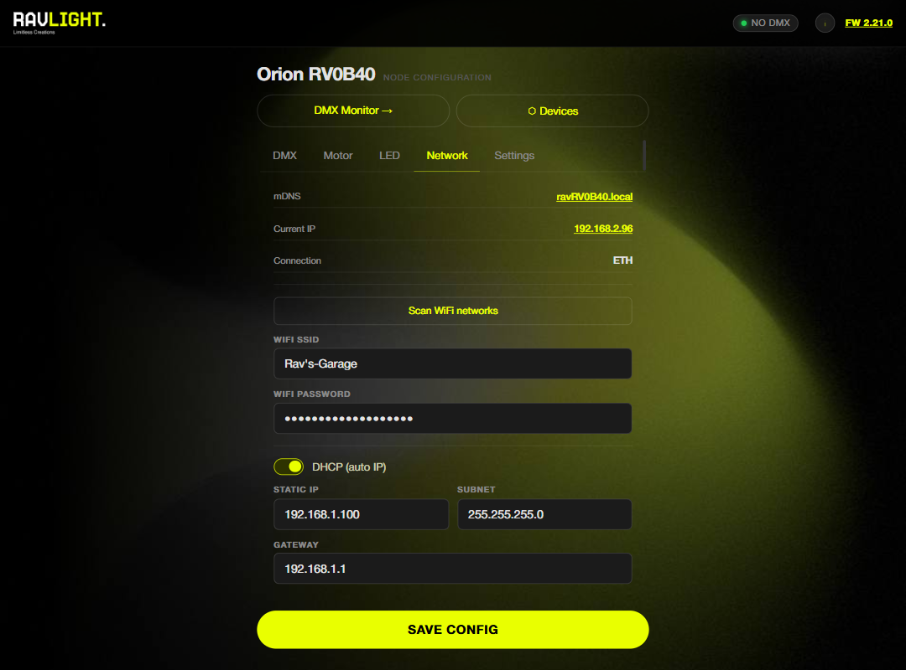
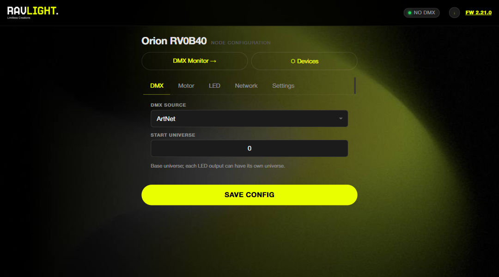
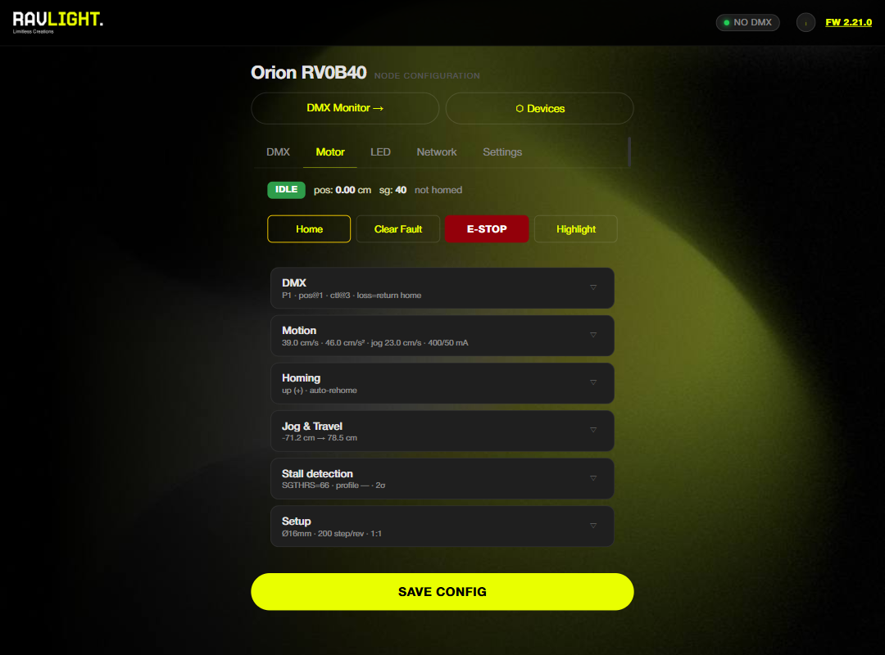
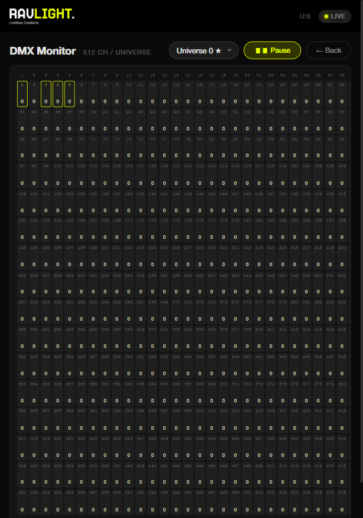
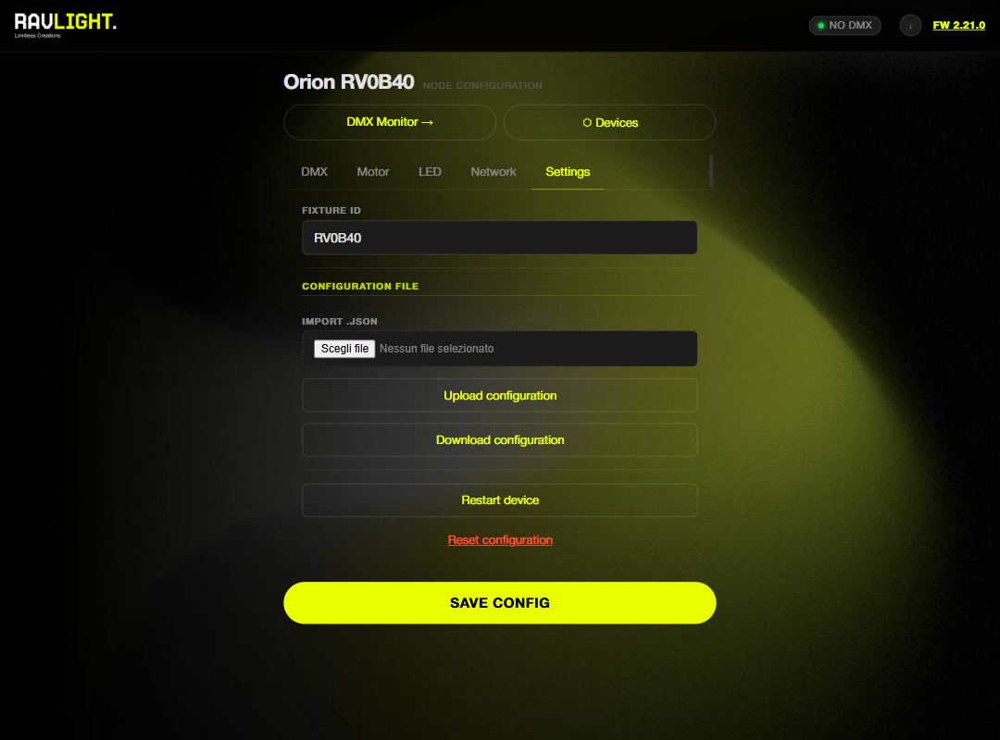

Web UI guide
Everything is configured from the browser — no app, no cloud. The page is served by the board itself and organized in accordions. Changes to DMX and fixture parameters apply live; only network and ID changes trigger a restart.
Network
Ethernet is primary on boards that have it — plug the cable and DHCP does the rest, or set a static IP. WiFi settings include an SSID scan list; if neither Ethernet nor WiFi comes up, the board falls back to its own SoftAP so it's never unreachable. A connection status badge shows the live link state, and the mDNS hostname (ravXXXX.local) is configured here too.

DMX
The source selector switches between Art-Net, sACN, Wired DMX, Auto Scene (recorder playback) and Effects — live, without a reboot. Set the start universe and start channel to match your patch. A live FPS counter shows the incoming frame rate of the active source, which is the quickest sanity check that data is flowing.

Fixture section
Each fixture injects its own accordion: Veyron shows personalities and dimming curves, Elyon shows the per-output table, Orion shows motor status, jog controls and the setup wizard. See the dedicated guides — Veyron, Elyon, Orion.

Example: Orion's motor section — status, action buttons and configuration cards.
DMX monitor
A standalone page showing the live DMX buffer as a grid of channel values with color coding. Channels used by the fixture are highlighted, a universe selector lets you inspect any registered universe, and pause/resume freezes the view for reading values. This is the first place to look when "nothing is moving" — if the grid is live, the network is fine.

Built-in Effects
Five fixture-aware effects (Solid, Rainbow, Chase, Fire, Twinkle) render on-device with live preview — color picker, speed and intensity — so a node can produce light with no console attached. Fixtures can add extras (Veyron: white accent, strobe RGB / strobe White).
Devices panel
The Devices button scans the LAN for other RavLight nodes over UDP broadcast and ESP-NOW and lists them with ID, IP and fixture info. From the detail popup you can highlight a device (visual identify), reset it remotely, or push WiFi credentials to it with "Send WiFi".
Settings
- OTA update — upload the
_fw_binary from a release and the board reboots onto it. One file: the web UI is compiled into the firmware image, so there is no separate filesystem upload. Check for updates asks ravlight.com whether a newer release exists and gives you the download link. - Backup / restore — export the full configuration as JSON and re-import it later or onto a replacement board.
- Fixture ID — the name used for the SoftAP, mDNS hostname and discovery.
- Restart and factory reset actions.
